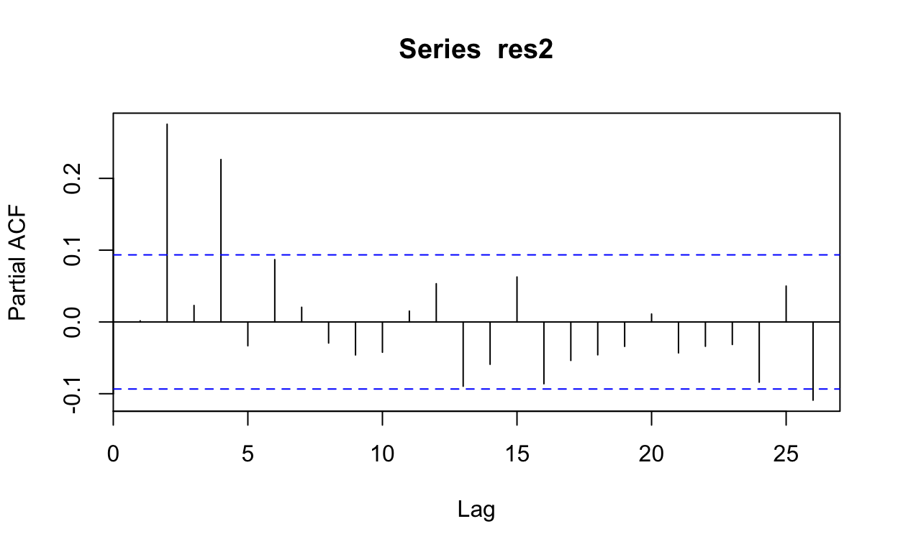

Code for our Interrupted Time Series Analysis
# Packages
library(MASS, exclude="select") # for glm.nb
library(tidyverse)
library(readxl)
library(lubridate)
library(broom)
library(here)
library(gt) # make tables loook nice
library(stringr)
library(tsModel) #for including harmonic fx for seasonality
library(boot)
library(mice)
library(janitor) #for tabyl
library(zoo) #for na.approx (interpolate values of population when month treated continuously)
# Load the data
tb_data_group <- read_csv(here("data","tb_data_group.csv"))
load(here("data/Pop_Age_Sex_HIV.rdata")) # Blantyre census data disaggregated by age and sex (from world population prospects and modified by CCK)
cens <- PopQ %>%
mutate(year_q=paste0(Year,":",Q)) %>%
mutate(yq=yq(year_q)) # yq is a date with 1st day of each quarter
age_levels_10 <- c("0-14","15-24", "25-34", "35-44", "45-54", "55-64", "65+")
covid_date_m <- dmy("01 Apr 2020") # date of COVID starting (whole month)
Define some functions for use later
# These functions takes a model and makes predictions and puts them into a dataframe (including counterfactual no-COVID)
# The first functions give a df containing one observation per month and predictions for all the levels contained in data plus a counterfactual "no COVID" time. This is used for calculating expected cumlative numbers of TB cases / CNR (particularly in counterfactual months).
# In second function month is not integer-coded but is continuous -- this is for plotting the graphs so that there is an instaneous effect of COVID (with integer-coded months the drop between March and April was a diagonal line on the graph connecting March and April 2020, which didn't make sense as we'd modelled an instaneneous drop)
model2pred_pop <- function(df,m){ #incorporating a population term to give CNRs
scaffold_df <- all %>%
select(month_num,covid) %>%
tidyr::expand(month_num,covid) %>% #makes predictions over every level that exists in the data
left_join(all%>%select(month,month_num,pop))
pred_obj <- predict(m, type="link", newdata=scaffold_df, se.fit=T)
df1 <- scaffold_df %>%
left_join(all) %>%
rename(cases_actual=cases) %>%
rename(cnr_actual=cnr) %>%
mutate(cases_pred=(exp(pred_obj$fit))) %>%
mutate(cnr_pred=exp(
pred_obj$fit - log(pop)
) * 100000 * 12) %>%
mutate(cases_low=(exp(pred_obj$fit - 1.96*pred_obj$se.fit))) %>%
mutate(cases_high=(exp(pred_obj$fit + 1.96*pred_obj$se.fit))) %>%
mutate(cnr_low=exp(
(pred_obj$fit - 1.96*pred_obj$se.fit) - log(pop)
)
*100000 * 12 ) %>%
mutate(cnr_high=exp(
(pred_obj$fit + 1.96*pred_obj$se.fit) - log(pop)
) *100000 * 12) %>%
mutate(cases_se=pred_obj$se.fit) %>%
mutate(cases_link=pred_obj$fit) #need to have this on link scale to bootstrap later
df2 <- df1 %>%
mutate(irrelevant=case_when(
covid==1 & month_num < covid_month_num ~ T,
TRUE ~ F
)) %>%
filter(irrelevant!=T) %>% #get rid of "COVID"=yes when time is before COVID (irrelevant predictions)
select(-irrelevant) %>%
mutate(c_fact=case_when(
covid==0 & month_num >= covid_month_num ~ T, #create a variable to indicate no-COVID by after COVID-time is counterfactual
T ~ F
))
df2
}
model2pred_pop_continuous <- function(df,m){ #incorporating a population term to give CNRs
seq <- seq(0,1, length=100) %>% tibble() # creates 100 data point between start and end month numbers (i.e. "month num" becomes nearly continuous)
expand_months <- all %>%
dplyr::select(month_num,covid) %>%
tidyr::expand(month_num,covid, seq$.) %>% # now includes 1000 extra points for each level of covid and month_num
mutate(month_num=`seq$.` + month_num) %>% # makes a 'continous' variable for month_num (have to keep name month_num so that plotting works as that's the variable name in model)
select(-`seq$.`)
x <- all %>% select(month_num, month) # I need this to get actual months back, not just month_num
expand_pop <- expand_months %>%
left_join(all, by=c("month_num")) %>%
select(month_num,covid.x, pop) %>%
rename(covid=covid.x)%>%
na.approx() %>% # from zoo package, linear interpolation of population between quarters (to match months now being effectively continuous)
as.data.frame() %>%
left_join(x)
scaffold_df_continuous <- expand_pop
pred_obj <- predict(m, type="link", newdata=scaffold_df_continuous, se.fit=T)
df1 <- scaffold_df_continuous %>%
left_join(all) %>% # this brings calendar month back but only when COVID=
rename(cases_actual=cases) %>%
rename(cnr_actual=cnr) %>%
mutate(cases_pred=(exp(pred_obj$fit))) %>%
mutate(cnr_pred=exp(
pred_obj$fit - log(pop)
) * 100000 * 12) %>%
mutate(cases_low=(exp(pred_obj$fit - 1.96*pred_obj$se.fit))) %>%
mutate(cases_high=(exp(pred_obj$fit + 1.96*pred_obj$se.fit))) %>%
mutate(cnr_low=exp(
(pred_obj$fit - 1.96*pred_obj$se.fit) - log(pop)
)
*100000 * 12 ) %>%
mutate(cnr_high=exp(
(pred_obj$fit + 1.96*pred_obj$se.fit) - log(pop)
) *100000 * 12) %>%
mutate(cases_se=pred_obj$se.fit) %>%
mutate(cases_link=pred_obj$fit) #need to have this on link scale to bootstrap later
df2 <- df1 %>%
mutate(irrelevant=case_when(
covid==1 & month_num < covid_month_num ~ T,
TRUE ~ F
)) %>%
filter(irrelevant!=T) %>% #get rid of "COVID"=yes when time is before COVID (irrelevant predictions)
select(-irrelevant) %>%
mutate(c_fact=case_when(
covid==0 & month_num >= covid_month_num ~ T, #create a variable to indicate no-COVID by after COVID-time is counterfactual
T ~ F
))
df2
}
model2pred_by <- function(df,m){
scaffold_df <- df %>%
dplyr::filter(hiv!="unknown") %>%
dplyr::filter(is.na(sex)==F) %>%
select(month_num,covid,fac,hiv,sex) %>%
tidyr::expand(month_num,covid,fac,hiv,sex) %>% #makes predictions over every level
left_join(by%>%select(month,month_num)%>%distinct())
pred_obj <- predict(m, type="link", newdata=scaffold_df, se.fit=T)
df1 <- scaffold_df %>%
left_join(df) %>%
rename(cases_actual=cases) %>%
mutate(cases_pred=(exp(pred_obj$fit))) %>%
mutate(cases_low=(exp(pred_obj$fit - 1.96*pred_obj$se.fit))) %>%
mutate(cases_high=(exp(pred_obj$fit + 1.96*pred_obj$se.fit))) %>%
mutate(cases_se=pred_obj$se.fit) %>%
mutate(cases_link=pred_obj$fit) #need to have this on link scale to bootstrap later
df2 <- df1 %>%
mutate(irrelevant=case_when(
covid==1 & month_num < covid_month_num ~ T,
TRUE ~ F
)) %>%
filter(irrelevant!=T) %>% #get rid of "COVID"=yes when time is before COVID (irrelevant predictions)
select(-irrelevant) %>%
mutate(c_fact=case_when(
covid==0 & month_num >= covid_month_num ~ T,
T ~ F))
df2
}
model2pred_by_continuous <- function(df,m){
seq <- seq(0,1, length=100) %>% tibble() # creates 100 data point between start and end month numbers (i.e. "month num" becomes nearly continuous)
expand_months <- df %>%
dplyr::select(month_num,covid) %>%
tidyr::expand(month_num,covid, seq$.) %>% # now includes 1000 extra points for each level of covid and month_num
mutate(month_num=`seq$.` + month_num) %>% # makes a 'continous' variable for month_num (have to keep name month_num so that plotting works as that's the variable name in model)
select(-`seq$.`)
x <- df %>%
dplyr::filter(hiv!="unknown") %>%
dplyr::filter(is.na(sex)==F)
scaffold_df <- expand_months %>% left_join(x) %>%
select(month_num,covid,fac,hiv,sex) %>%
tidyr::expand(month_num,covid,fac,hiv,sex) %>% #makes predictions over every level
left_join(by%>%select(month,month_num)%>%distinct())
pred_obj <- predict(m, type="link", newdata=scaffold_df, se.fit=T)
df1 <- scaffold_df %>%
left_join(df) %>%
rename(cases_actual=cases) %>%
mutate(cases_pred=(exp(pred_obj$fit))) %>%
mutate(cases_low=(exp(pred_obj$fit - 1.96*pred_obj$se.fit))) %>%
mutate(cases_high=(exp(pred_obj$fit + 1.96*pred_obj$se.fit))) %>%
mutate(cases_se=pred_obj$se.fit) %>%
mutate(cases_link=pred_obj$fit) #need to have this on link scale to bootstrap later
df2 <- df1 %>%
mutate(irrelevant=case_when(
covid==1 & month_num < covid_month_num ~ T,
TRUE ~ F
)) %>%
filter(irrelevant!=T) %>% #get rid of "COVID"=yes when time is before COVID (irrelevant predictions)
select(-irrelevant) %>%
mutate(c_fact=case_when(
covid==0 & month_num >= covid_month_num ~ T,
T ~ F))
df2
}
NB. All is grouped data of total number of TB cases by month.
tb_data <- tb_data_group %>% uncount(n) %>% mutate(month=dmy(month)) %>% mutate(fac=factor(fac),
sex = factor(sex),
hiv = factor(hiv))
cens_10yr <- cens %>% mutate(age_gp=case_when(
Age=="[0,4)" ~ "0-14",
Age=="[5,9)" ~ "0-14",
Age=="[10,14)" ~ "0-14",
Age=="[15,19)" ~ "15-24",
Age=="[20,24)" ~ "15-24",
Age=="[25,29)" ~ "25-34",
Age=="[30,34)" ~ "25-34",
Age=="[35,39)" ~ "35-44",
Age=="[40,44)" ~ "35-44",
Age=="[45,49)" ~ "45-54",
Age=="[50,54)" ~ "45-54",
Age=="[55,59)" ~ "55-64",
Age=="[60,64)" ~ "55-64",
Age=="[60,64)" ~ "55-64",
Age=="[65,69)" ~ "65+",
Age=="[70,74)" ~ "65+",
Age=="[75, )" ~ "65+"
)) %>%
group_by(yq, age_gp, Sex) %>%
summarise(pop=sum(Population))
cens_all <- cens %>%
group_by(yq) %>%
summarise(pop=sum(Population)) %>%
mutate(`0`=pop, # so this is a slightly hacky way to get population demoninators for each month (the quarter denominator gets repeated the same three times, not ideal, but it doesn't make any difference. For plotting the graph - where CNR is a continous variable, I interpolate population to avoid zigzags)
`1`=pop,
`2`=pop) %>%
pivot_longer(c(`0`,`1`,`2`),names_to="m") %>%
mutate(m=as.numeric(m)) %>%
mutate(month=yq+months(m))
# then this is dataframe lumping all cases togehter
all <- tb_data %>%
group_by(month) %>%
summarise(cases=n()) %>% #generates cases per month
ungroup() %>%
mutate(covid = if_else(month >= covid_date_m, 1L,0L)) %>%
arrange(month) %>%
mutate(month_num = 1:n()) %>% #create a month_num variable to use in model (rather than actual date, so coefficients make sense)
left_join(cens_all) %>%
mutate(cnr=(cases/pop)*100000*12) # x12 to get annualised CNRs (NB. children included in both denominator and numerator here)
covid_month_num <- all %>% ungroup() %>% filter(month==covid_date_m) %>% select(month_num) %>% distinct() %>% as.numeric() # this is to that models stay correct even if choose to change "covid_date_m"
all %>% summarise(sum(cases))
# A tibble: 1 x 1
`sum(cases)`
<int>
1 10274tb_data %>% nrow()
[1] 10274b4covid_m <- all %>% filter(month<=dmy("01 March 2020"))
b4covid <- tb_data %>% filter(month<=dmy("01 March 2020"))
b4covid_m %>% arrange(cnr) %>% slice_tail(n=1)
# A tibble: 1 x 9
month cases covid month_num yq pop m value
<date> <int> <int> <int> <date> <dbl> <dbl> <dbl>
1 2016-11-01 259 0 6 2016-10-01 7.67e5 1 7.67e5
# with 1 more variable: cnr <dbl>b4covid_m %>% arrange(cnr) %>% slice_head(n=1)
# A tibble: 1 x 9
month cases covid month_num yq pop m value
<date> <int> <int> <int> <date> <dbl> <dbl> <dbl>
1 2019-10-01 95 0 41 2019-10-01 8.33e5 0 8.33e5
# with 1 more variable: cnr <dbl>b4covid %>% nrow()
[1] 9199b4covid %>% tabyl(sex)
sex n percent valid_percent
female 3561 0.387107294 0.3882468
male 5611 0.609957604 0.6117532
<NA> 27 0.002935102 NAb4covid %>% tabyl(hiv)
hiv n percent valid_percent
negative 3279 0.35645179 0.3603693
positive 5820 0.63267746 0.6396307
<NA> 100 0.01087075 NAb4covid %>% tabyl(fac)
fac n percent
hc 4310 0.4685292
qech 4889 0.5314708m1_nb <-glm.nb(cases ~ covid + month_num + covid:I(month_num-covid_month_num) + offset(log(pop)), all)
broom::tidy(m1_nb, exp=T, conf.int = T) %>% gt()
| term | estimate | std.error | statistic | p.value | conf.low | conf.high |
|---|---|---|---|---|---|---|
| (Intercept) | 0.0003236993 | 0.039372603 | -204.093577 | 0.000000e+00 | 0.0002996355 | 0.000349907 |
| covid | 0.6403553658 | 0.099365146 | -4.485798 | 7.264146e-06 | 0.5266200632 | 0.779310109 |
| month_num | 0.9889841145 | 0.001479681 | -7.486080 | 7.096098e-14 | 0.9861008442 | 0.991873419 |
| covid:I(month_num - covid_month_num) | 1.0439775426 | 0.018821477 | 2.286642 | 2.221673e-02 | 1.0058566856 | 1.083617001 |
coeff <- broom::tidy(m1_nb, exp=T, conf.int = T)
1 - coeff[2,2]
estimate
1 0.35964461 - coeff[2,6]
conf.low
1 0.47337991 - coeff[2,7]
conf.high
1 0.2206899m1_nb_all <- model2pred_pop(all,m1_nb) #this is used to make cumulative predictions
m1_nb_all_continuous <- model2pred_pop_continuous(all,m1_nb) # this is used to plot
# Plotting the whole timescale (treating time as continuous)
# the below bit of code (and 'plot df' is a slightly hack-y way to make 'seq' correspond to real dates to be able to plot)
cT <- m1_nb_all_continuous %>% filter(c_fact==T) # creating a sequence of dates to match month_num (a continuous numerical value)
start_cT <- min(cT$month, na.rm=T)
end_cT <- max(cT$month, na.rm=T) + months(1) - days(1) # the end date needs to be the END of the month, not the start of the month
length_cT <- cT %>% nrow()
seq_cT <- seq.Date(start_cT,end_cT,length.out = length_cT)
cF <- m1_nb_all_continuous %>% filter(c_fact==F)
start_cF <- min(cF$month, na.rm=T)
end_cF <- max(cF$month, na.rm=T) + months(1) - days(1)
length_cF <- cF %>% nrow()
seq_cF <- seq.Date(start_cF,end_cF,length.out = length_cF)
seq <- c(seq_cF, seq_cT)
plot_df <- m1_nb_all_continuous %>% arrange(c_fact,month_num) %>% cbind(seq) # "plot df" has month_num transformed to actual date
# Plot observed values and predictions
ggplot() +
geom_rect(aes(xmin=covid_date_m, xmax=dmy("15 Dec 2020"), ymin=-Inf, ymax=Inf), alpha=0.1) +
geom_line(aes(y=cnr_pred, x=seq, linetype="observed", color="observed"), data=plot_df %>% filter(c_fact==F)) +
geom_ribbon(aes(ymax=cnr_high, ymin=cnr_low, x=seq, fill="observed"), alpha=0.3, data=plot_df %>% filter(c_fact==F)) +
geom_line(aes(y=cnr_pred, x=seq, linetype="counterfactual", color="counterfactual"), data=plot_df %>% filter(c_fact==T)) +
geom_ribbon(aes(ymax=cnr_high, ymin=cnr_low, x=seq, fill="counterfactual"), alpha=0.3, data=plot_df %>% filter(c_fact==T)) +
geom_point(aes(y=cnr_actual, x=month+days(15)), data=plot_df, shape=1) + # plot actual numbers on 15th each month
#geom_vline(aes(xintercept=covid_date_m)) +
scale_linetype_manual(name="legend",values=c("dashed","solid")) +
scale_fill_manual(name="legend", values=c("#DE3163","#3FE0D0")) +
scale_color_manual(name="legend", values=c("#DE3163","#4286f4")) +
ylab("Case Notification Rate (per 100,000 person-years)") +
xlab("Month and Year") +
labs(title="Blantyre TB Case Notifcation Rate",
caption="CNR = Cases TB notified per 100,000 person-years, \n Dots = observed case notification rate \n Line = fitted model (95% CI) with both step and slope change due to COVID, see methods for details \n Shaded area indicates time that COVID emergency was declared in Malawi") +
coord_cartesian(xlim=c(dmy("01 April 2016"), dmy("15 Dec 2020")),ylim=c(0,430)) +
scale_x_date(expand = c(0,0)) +
theme_bw() %+replace%
theme(legend.title = element_blank())
And some examples of predications from model
m1_nb_all %>% filter(month==dmy("01 March 2020") | month==dmy("01 April 2020")) %>% select(-month_num, -yq, -m, -pop, -value)
# A tibble: 3 x 13
covid month cases_actual cnr_actual cases_pred cnr_pred
<int> <date> <int> <dbl> <dbl> <dbl>
1 0 2020-03-01 168 240. 163. 233.
2 0 2020-04-01 NA NA 162. 231.
3 1 2020-04-01 107 152. 104. 148.
# with 7 more variables: cases_low <dbl>, cases_high <dbl>,
# cnr_low <dbl>, cnr_high <dbl>, cases_se <dbl>, cases_link <dbl>,
# c_fact <lgl>m1_nb_all %>% filter(month==dmy("01 Nov 2020") | month==dmy("01 Dec 2020")) %>% select(-month_num, -yq, -m, -pop, -value)
# A tibble: 4 x 13
covid month cases_actual cnr_actual cases_pred cnr_pred
<int> <date> <int> <dbl> <dbl> <dbl>
1 0 2020-11-01 NA NA 152. 214.
2 1 2020-11-01 146 205. 132. 185.
3 0 2020-12-01 NA NA 151. 211.
4 1 2020-12-01 111 156. 136. 191.
# with 7 more variables: cases_low <dbl>, cases_high <dbl>,
# cnr_low <dbl>, cnr_high <dbl>, cases_se <dbl>, cases_link <dbl>,
# c_fact <lgl>Model checking
res1 <- residuals(m1_nb,type="deviance")
plot(all$month_num,res1,ylim=c(-5,10),pch=19,cex=0.7,col=grey(0.6),
main="Residuals over time",ylab="Deviance residuals",xlab="Date")
# Further check for autocorrelation by examining the autocorrelation and
# partial autocorrelation functions
acf(res1)
pacf(res1)
Use model to illustrate missing cases / missing CNR. Use parametric bootstrapping to get confidence intervals
# c_fact = FALSE (from April to December) is a modelled estimate (with a CI), BUT, the model estimate and the actual observed value (i.e. 505 cases) is identical. So going to use this as a constant, without a distribution.
m1_nb_covidt <- m1_nb_all %>% filter(month>=covid_date_m) #only interested in time period after "COVID time"
#NB. This is covid_no when you just return the modelled cases (on the link scale 'cases_link'); the next function replaces cases_link with a distribution with mean 'cases_link' and st. dev 'st.error' of fir
covid_no <- m1_nb_covidt %>% filter(c_fact==T) %>%
summarise(n_nocovid = sum(
exp(
cases_link
)))
boot_fx <- function(df){
covid_yes <- df %>% filter(c_fact==F) %>%
summarise(n_actual = sum(cases_actual))
covid_no <- df %>% filter(c_fact==T) %>%
summarise(n_nocovid = sum(
exp(
as.numeric(pmap(list(cases_link,cases_se), function(mu, sd) rnorm(1, mu, sd)))
)))
abs_diff <- covid_no - covid_yes
rel_diff <- (covid_no - covid_yes) / covid_no
as.numeric(c(covid_yes,covid_no,abs_diff,rel_diff))
}
# run once to check
boot_fx(m1_nb_covidt) # col 1 = observed cases, col 2 = predicted under counterfactual, col 3 = abs difference, col 4 = rel diff (one replicate)
[1] 1075.0000000 1421.5637648 346.5637648 0.2437905# Now generate estimates with CI (using point estimate from model (cases_pred) rather than mean of boot output, although should be v. similar)
table_fx <- function(df,sd){
covid_yes <- df %>% filter(c_fact==F) %>%
summarise(n_actual = sum(cases_actual)) %>%
mutate(str=n_actual)
covid_no <- df %>% filter(c_fact==T) %>%
summarise(n = sum(
exp(
cases_link
))) %>%
mutate(nhi = n + 1.96*sd[2],
nlo = n - 1.96*sd[2]) %>%
mutate(str = paste0(
round(n,digits=0)," (",round(nlo,digits=0)," to ",round(nhi,digits=0),")"
))
abs_diff <- tibble(covid_no$n - covid_yes) %>%
rename(n=n_actual) %>%
mutate(
nhi = n + 1.96*sd[3],
nlo = n - 1.96*sd[3]) %>%
mutate(str = paste0(
round(n,digits=0)," (",round(nlo,digits=0)," to ",round(nhi,digits=0),")"
))
rel_diff <- tibble((covid_no$n - covid_yes) / covid_no$n) %>%
rename(n=n_actual) %>%
mutate(
nhi = n + 1.96*sd[4],
nlo = n - 1.96*sd[4]) %>%
mutate(str = paste0(
round(n,digits=3)," (",round(nlo,digits=3)," to ",round(nhi,digits=3),")"
))
cbind(covid_yes$str, covid_no$str, abs_diff$str, rel_diff$str) %>% as_tibble() %>%
rename(covid_yes=V1,
covid_no=V2,
rel.diff = V3,
abs.diff = V4)
}
table_fx(m1_nb_covidt,sd_x) %>% gt()
| covid_yes | covid_no | rel.diff | abs.diff |
|---|---|---|---|
| 1075 | 1408 (1367 to 1450) | 333 (292 to 375) | 0.237 (0.214 to 0.259) |
# A tibble: 1 x 1
mean
<dbl>
1 221.Health centre, sex and HIV status. Cases rather than CNR, as dont have denominators for health centre or HIV status
# Impute the small number of missing variables
tb_data_mids <- mice(
data=tb_data,
m=1, #just one imputation as missing data v. small
method="pmm"
)
iter imp variable
1 1 sex hiv
2 1 sex hiv
3 1 sex hiv
4 1 sex hiv
5 1 sex hivtb_data_imp <- complete(tb_data_mids, action="long") %>% select(-.imp, -.id) #complete data set
by <- tb_data_imp %>%
group_by(month,sex,hiv,fac) %>%
summarise(cases=n()) %>%
ungroup() %>%
mutate(covid = if_else(month >= covid_date_m, 1L,0L)) %>%
arrange(month) %>%
group_by(month) %>%
mutate(month_num = cur_group_id()) %>%
ungroup()
m2 <-glm.nb(cases ~ sex + hiv + fac + sex:hiv:fac + sex:hiv:fac:covid + sex:hiv:fac:month_num + sex:hiv:fac:covid:I(month_num-covid_month_num), data=by)
tidy(m2, exp=T, conf.int = T) %>% gt()
| term | estimate | std.error | statistic | p.value | conf.low | conf.high |
|---|---|---|---|---|---|---|
| (Intercept) | 12.0251183 | 0.193620527 | 12.84470035 | 9.210788e-38 | 8.2030630 | 17.6075891 |
| sexmale | 1.4475707 | 0.101476731 | 3.64504029 | 2.673499e-04 | 1.1842292 | 1.7698786 |
| hivpositive | 2.3987599 | 0.109916548 | 7.96014716 | 1.718348e-15 | 1.9346071 | 2.9768830 |
| facqech | 1.4155812 | 0.101392541 | 3.42767032 | 6.087843e-04 | 1.1585995 | 1.7299463 |
| sexfemale:hivnegative:fachc | 0.9964700 | 0.218406363 | -0.01619129 | 9.870818e-01 | 0.6478543 | 1.5329785 |
| sexmale:hivnegative:fachc | 1.4668904 | 0.154480679 | 2.48021182 | 1.313044e-02 | 1.0840847 | 1.9852911 |
| sexfemale:hivpositive:fachc | 0.8758605 | 0.151095466 | -0.87724996 | 3.803509e-01 | 0.6495731 | 1.1807157 |
| sexmale:hivpositive:fachc | NA | NA | NA | NA | NA | NA |
| sexfemale:hivnegative:facqech | 0.9937354 | 0.163973087 | -0.03832523 | 9.694284e-01 | 0.7196597 | 1.3715050 |
| sexmale:hivnegative:facqech | NA | NA | NA | NA | NA | NA |
| sexfemale:hivpositive:facqech | NA | NA | NA | NA | NA | NA |
| sexmale:hivpositive:facqech | NA | NA | NA | NA | NA | NA |
| sexfemale:hivnegative:fachc:covid | 0.6043090 | 0.265634745 | -1.89609852 | 5.794702e-02 | 0.3525601 | 1.0080344 |
| sexmale:hivnegative:fachc:covid | 0.6119120 | 0.194565356 | -2.52443085 | 1.158858e-02 | 0.4160417 | 0.8951865 |
| sexfemale:hivpositive:fachc:covid | 0.5847016 | 0.249274854 | -2.15285945 | 3.132973e-02 | 0.3547983 | 0.9418090 |
| sexmale:hivpositive:fachc:covid | 0.6664406 | 0.202579137 | -2.00318868 | 4.515704e-02 | 0.4450009 | 0.9905088 |
| sexfemale:hivnegative:facqech:covid | 0.5837783 | 0.303115318 | -1.77567423 | 7.578663e-02 | 0.3138229 | 1.0394200 |
| sexmale:hivnegative:facqech:covid | 0.6524551 | 0.242355882 | -1.76192558 | 7.808187e-02 | 0.4010068 | 1.0406716 |
| sexfemale:hivpositive:facqech:covid | 0.6668719 | 0.198163696 | -2.04455853 | 4.089840e-02 | 0.4485947 | 0.9848908 |
| sexmale:hivpositive:facqech:covid | 0.6828529 | 0.187112347 | -2.03875309 | 4.147468e-02 | 0.4719652 | 0.9838750 |
| sexfemale:hivnegative:fachc:month_num | 1.0031503 | 0.003698089 | 0.85053755 | 3.950263e-01 | 0.9958617 | 1.0105012 |
| sexmale:hivnegative:fachc:month_num | 1.0044151 | 0.002910811 | 1.51347173 | 1.301599e-01 | 0.9987862 | 1.0100834 |
| sexfemale:hivpositive:fachc:month_num | 0.9887630 | 0.003245984 | -3.48140720 | 4.987866e-04 | 0.9824171 | 0.9951219 |
| sexmale:hivpositive:fachc:month_num | 0.9894010 | 0.002818466 | -3.78062065 | 1.564379e-04 | 0.9838871 | 0.9949293 |
| sexfemale:hivnegative:facqech:month_num | 0.9855482 | 0.003808095 | -3.82270859 | 1.319937e-04 | 0.9781690 | 0.9929322 |
| sexmale:hivnegative:facqech:month_num | 0.9874782 | 0.003304027 | -3.81377534 | 1.368599e-04 | 0.9811326 | 0.9938338 |
| sexfemale:hivpositive:facqech:month_num | 0.9906002 | 0.002812845 | -3.35752887 | 7.864253e-04 | 0.9850718 | 0.9961447 |
| sexmale:hivpositive:facqech:month_num | 0.9852676 | 0.002670690 | -5.55737648 | 2.738596e-08 | 0.9800560 | 0.9904875 |
| sexfemale:hivnegative:fachc:covid:I(month_num - covid_month_num) | 0.9548982 | 0.054172400 | -0.85192049 | 3.942582e-01 | 0.8571088 | 1.0625013 |
| sexmale:hivnegative:fachc:covid:I(month_num - covid_month_num) | 1.0082146 | 0.037267061 | 0.21952355 | 8.262422e-01 | 0.9365807 | 1.0855034 |
| sexfemale:hivpositive:fachc:covid:I(month_num - covid_month_num) | 1.0438382 | 0.047544235 | 0.90241130 | 3.668384e-01 | 0.9517342 | 1.1457239 |
| sexmale:hivpositive:fachc:covid:I(month_num - covid_month_num) | 1.0127307 | 0.039290539 | 0.32196863 | 7.474765e-01 | 0.9369607 | 1.0946820 |
| sexfemale:hivnegative:facqech:covid:I(month_num - covid_month_num) | 1.0870723 | 0.055941002 | 1.49243231 | 1.355859e-01 | 0.9740792 | 1.2158909 |
| sexmale:hivnegative:facqech:covid:I(month_num - covid_month_num) | 1.0914497 | 0.044414992 | 1.97020923 | 4.881440e-02 | 1.0005530 | 1.1922383 |
| sexfemale:hivpositive:facqech:covid:I(month_num - covid_month_num) | 1.0391332 | 0.037616981 | 1.02046858 | 3.075063e-01 | 0.9641577 | 1.1203328 |
| sexmale:hivpositive:facqech:covid:I(month_num - covid_month_num) | 1.0853049 | 0.034727125 | 2.35726342 | 1.841018e-02 | 1.0142610 | 1.1620662 |
coeffs2 <- tidy(m2, exp=T, conf.int = T)
res2 <- residuals(m2,type="deviance")
plot(by$month_num,res2,ylim=c(-5,10),pch=19,cex=0.7,col=grey(0.6),
main="Residuals over time",ylab="Deviance residuals",xlab="Date")
# Further check for autocorrelation by examining the autocorrelation and
# partial autocorrelation functions
acf(res2)
pacf(res2)

Make predictions and plot them
m2_by <- model2pred_by(by,m2)
m2_by_continuous <- model2pred_by_continuous(by,m2)
# the below bit of code (and 'plot df' is a slightly hack-y way to make 'seq' correspond to real dates to be able to plot)
cTb <- m2_by_continuous %>% filter(c_fact==T) # creating a sequence of dates to match month_num (a continuous numerical value)
start_cTb <- min(cTb$month, na.rm=T)
end_cTb <- max(cTb$month, na.rm=T) + months(1) - days(1) # the end date needs to be the END of the month, not the start of the month
length_cTb <- cTb %>% nrow()
seq_cTb <- seq.Date(start_cTb,end_cTb,length.out = length_cTb)
cFb <- m2_by_continuous %>% filter(c_fact==F)
start_cFb <- min(cFb$month, na.rm=T)
end_cFb <- max(cFb$month, na.rm=T) + months(1) - days(1)
length_cFb <- cFb %>% nrow()
seq_cFb <- seq.Date(start_cFb,end_cFb,length.out = length_cFb)
seqb <- c(seq_cFb, seq_cTb)
plot_df_by <- m2_by_continuous %>% arrange(c_fact,month_num) %>% cbind(seqb) # "plot df" has month_num transformed to actual date
label_hc <- c( #labels for plot
hc = "Health Centre",
qech = "Queen Elizabeth Central Hospital"
)
label_hiv <- c( #labels for plot
negative="HIV Negative",
positive="HIV Positive"
)
ggplot() +
geom_line(aes(y=cases_pred,x=seqb, color=sex), data=plot_df_by%>%filter(c_fact==F)) +
geom_ribbon(aes(ymax=cases_high, ymin=cases_low, x=seqb, fill=sex), alpha=0.3, data=plot_df_by %>% filter(c_fact==F)) +
geom_point(aes(y=cases_actual, x=month+days(15), color=sex), size=0.5, alpha=0.7, data=plot_df_by%>%filter(c_fact==F))+
geom_vline(xintercept=covid_date_m, linetype="dotted") +
scale_fill_manual(name="legend", values=c("#E58601","#B40F20")) +
scale_color_manual(name="legend", values=c("#E58601","#B40F20")) +
ylab("Number of TB cases notified per month") +
xlab("Month and Year") +
labs(title="",
caption="Dots = observed number of cases \n Line = fitted model (95% CI) with both step and slope change due to COVID, see methods for details \n Vertical lines indicates time that COVID emergency was declared in Malawi") +
facet_grid(hiv~fac,
labeller=labeller(
fac=label_hc,
hiv=label_hiv
)) +
theme_bw() %+replace%
theme(legend.title = element_blank())
Use model to make predictions by number
# Point estimate of missing
m2_by %>% group_by(month,c_fact) %>% summarise(n=sum(cases_pred)) %>% filter(month>=covid_date_m) %>% group_by(c_fact) %>% summarise(n=sum(n))
# A tibble: 2 x 2
c_fact n
<lgl> <dbl>
1 FALSE 1075.
2 TRUE 1427.y <- m2_by %>% group_by(month,c_fact) %>% summarise(n=sum(cases_pred)) %>% filter(month>=covid_date_m) %>% group_by(c_fact) %>% summarise(n=sum(n))
y[2,2] - y[1,2]
n
1 351.4959# Boot-strappable function
m2_by_covidt <- m2_by %>% filter(month>=covid_date_m)
boot_fx_by <- function(df,var){
var <- enquo(var)
covid_yes <- df %>%
filter(c_fact==F) %>%
group_by(!!var) %>%
summarise(
n=sum(
cases_actual
))
covid_no <- df %>%
filter(c_fact==T) %>%
group_by(!!var) %>%
summarise(
n=sum(
cases_pred
))
abs_diff <- covid_no$n - covid_yes$n
rel_diff <- (covid_no$n - covid_yes$n) / covid_no$n
covid_yes %>% left_join(covid_no,by=quo_name(var)) %>% cbind(abs_diff) %>% cbind(rel_diff) %>%
rename(covid_yes=n.x,
covid_no=n.y)
}
# Run each of these once to have a look
boot_fx_by(m2_by_covidt,sex)
sex covid_yes covid_no abs_diff rel_diff
1 female 390 554.0506 164.0506 0.2960931
2 male 685 872.4766 187.4766 0.2148786boot_fx_by(m2_by_covidt,hiv)
hiv covid_yes covid_no abs_diff rel_diff
1 negative 416 603.5397 187.5397 0.3107330
2 positive 659 822.9875 163.9875 0.1992588boot_fx_by(m2_by_covidt,fac)
fac covid_yes covid_no abs_diff rel_diff
1 hc 488 760.4971 272.49709 0.3583144
2 qech 587 666.0301 79.03005 0.1186584# Annoyingly, I can't work out how to pass second variable within my function to "boot" (ie. can't add a var).
# Go back to original boot function
# Boot sex
male <- m2_by_covidt %>% filter(sex=="male")
female <- m2_by_covidt %>% filter(sex=="female")
hc <- m2_by_covidt %>% filter(fac=="hc")
qech <- m2_by_covidt %>% filter(fac=="qech")
hivpos <- m2_by_covidt %>% filter(hiv=="positive")
hivneg <- m2_by_covidt %>% filter(hiv=="negative")
# Then boot each one
male_res <- boot(male,boot_fx,R=1000,sim="parametric")
female_res <- boot(female,boot_fx,R=1000,sim="parametric")
hc_res <- boot(hc,boot_fx,R=1000,sim="parametric")
qech_res <- boot(qech,boot_fx,R=1000,sim="parametric")
hivpos_res <- boot(hivpos,boot_fx,R=1000,sim="parametric")
hivneg_res <- boot(hivneg,boot_fx,R=1000,sim="parametric")
all_res <- boot(m2_by_covidt, boot_fx, R=1000, sim="parametric")
#Get st. dev
boot_sd <- function(var){
c(sd(var$t[,1]),sd(var$t[,2]),sd(var$t[,3]),sd(var$t[,4]))
}
sd_male <- boot_sd(male_res)
sd_female <- boot_sd(female_res)
sd_hc <- boot_sd(hc_res)
sd_qech <- boot_sd(qech_res)
sd_hivpos <- boot_sd(hivpos_res)
sd_hivneg <- boot_sd(hivneg_res)
sd_all <- boot_sd(all_res)
table_fx_2 <- function(df,df_sd){ #not using boot function results, as get the point estimate direct from model; but using boot st. devs
covid_yes <- df %>% filter(c_fact==F) %>%
summarise(n_actual = sum(cases_actual)) %>%
mutate(str=n_actual)
covid_no <- df %>% filter(c_fact==T) %>%
summarise(n = sum(
exp(
cases_link
))) %>%
mutate(nhi = n + 1.96*df_sd[2],
nlo = n - 1.96*df_sd[2]) %>%
mutate(str = paste0(
round(n,digits=0)," (",round(nlo,digits=0)," to ",round(nhi,digits=0),")"
))
abs_diff <- tibble(covid_no$n - covid_yes) %>%
rename(n=n_actual) %>%
mutate(
nhi = n + 1.96*df_sd[3],
nlo = n - 1.96*df_sd[3]) %>%
mutate(str = paste0(
round(n,digits=0)," (",round(nlo,digits=0)," to ",round(nhi,digits=0),")"
))
rel_diff <- tibble((covid_no$n - covid_yes) / covid_no$n) %>%
rename(n=n_actual) %>%
mutate(
nhi = n + 1.96*df_sd[4],
nlo = n - 1.96*df_sd[4]) %>%
mutate(str = paste0(
round(n,digits=3)," (",round(nlo,digits=3)," to ",round(nhi,digits=3),")"
))
cbind(covid_yes$str, covid_no$str, abs_diff$str, rel_diff$str) %>% as_tibble() %>%
rename(covid_yes=V1,
covid_no=V2,
abs.diff = V3,
rel.diff = V4)
}
table_fx_2(male,sd_male) %>%
bind_rows(table_fx_2(female,sd_female)) %>%
bind_rows(table_fx_2(hc,sd_hc)) %>%
bind_rows(table_fx_2(qech,sd_qech)) %>%
bind_rows(table_fx_2(hivpos,sd_hivpos)) %>%
bind_rows(table_fx_2(hivneg,sd_hivneg)) %>%
cbind(c("male","female","hc","qech","hivpos","hivneg")) %>%
rename(group = `c(\"male\", \"female\", \"hc\", \"qech\", \"hivpos\", \"hivneg\")`) %>%
select(group,everything()) %>%
gt()
| group | covid_yes | covid_no | abs.diff | rel.diff |
|---|---|---|---|---|
| male | 685 | 872 (846 to 899) | 187 (161 to 214) | 0.215 (0.191 to 0.238) |
| female | 390 | 554 (534 to 574) | 164 (144 to 184) | 0.296 (0.271 to 0.321) |
| hc | 488 | 760 (736 to 785) | 272 (248 to 297) | 0.358 (0.338 to 0.379) |
| qech | 587 | 666 (644 to 688) | 79 (57 to 101) | 0.119 (0.09 to 0.148) |
| hivpos | 659 | 823 (798 to 848) | 164 (139 to 189) | 0.199 (0.175 to 0.223) |
| hivneg | 416 | 604 (582 to 626) | 188 (166 to 210) | 0.311 (0.286 to 0.336) |
# Table for everyone
table_fx_2(m2_by_covidt,sd_all) %>% gt()
| covid_yes | covid_no | abs.diff | rel.diff |
|---|---|---|---|
| 1075 | 1427 (1394 to 1459) | 352 (319 to 384) | 0.246 (0.229 to 0.264) |
# Harmonics for seasons
sens1 <- glm.nb(cases ~ offset(log(pop)) + covid*month_num + harmonic(month_num,2,12), all) # have to use month_num here as I can't get 'harmonic' to work sensibly with dates
s1_all <- model2pred_pop(all,sens1)
plot_all_fx <- function(df){
ggplot() +
geom_rect(aes(xmin=covid_date_m, xmax=dmy("15 Dec 2020"), ymin=-Inf, ymax=Inf), alpha=0.1) +
geom_line(aes(y=cnr_pred, x=month, linetype="observed", color="observed"), data=df %>% filter(c_fact==F)) +
geom_ribbon(aes(ymax=cnr_high, ymin=cnr_low, x=month, fill="observed"), alpha=0.3, data=df %>% filter(c_fact==F)) +
geom_line(aes(y=cnr_pred, x=month, linetype="counterfactual", color="counterfactual"), data=df %>% filter(c_fact==T)) +
geom_ribbon(aes(ymax=cnr_high, ymin=cnr_low, x=month, fill="counterfactual"), alpha=0.3, data=df %>% filter(c_fact==T)) +
geom_point(aes(y=cnr_actual, x=month+days(15)), data=plot_df, shape=1) + # plot actual numbers on 15th each month
#geom_vline(aes(xintercept=covid_date_m)) +
scale_linetype_manual(name="legend",values=c("dashed","solid")) +
scale_fill_manual(name="legend", values=c("#DE3163","#3FE0D0")) +
scale_color_manual(name="legend", values=c("#DE3163","#4286f4")) +
ylab("Case Notification Rate (per 100,000 person-years)") +
xlab("Month and Year") +
labs(title="Blantyre TB Case Notifcation Rate",
caption="CNR = Cases TB notified per 100,000 person-years, \n Dots = observed case notification rate \n Line = fitted model (95% CI) with both step and slope change due to COVID, see methods for details \n Shaded area indicates time that COVID emergency was declared in Malawi") +
coord_cartesian(xlim=c(dmy("01 April 2016"), dmy("15 Dec 2020")),ylim=c(0,430)) +
scale_x_date(expand = c(0,0)) +
theme_bw() %+replace%
theme(legend.title = element_blank())
}
plot_all_fx(s1_all)
s1_covidt <- s1_all %>% filter(month>=covid_date_m)
boot_fx(s1_covidt)
[1] 1075.0000000 1420.7231679 345.7231679 0.2433431est_s1 <- boot(s1_covidt,boot_fx,R=100,sim="parametric")
sd_s1 <- c(sd(est_s1$t[,1]),sd(est_s1$t[,2]),sd(est_s1$t[,3]),sd(est_s1$t[,4])) # boot command output is a vector of estimate for worst / actual / averted
table_fx(s1_covidt,sd_s1)
# A tibble: 1 x 4
covid_yes covid_no rel.diff abs.diff
<chr> <chr> <chr> <chr>
1 1075 1387 (1330 to 1443) 312 (255 to 368) 0.225 (0.193 to 0.25table_fx(m1_nb_covidt,sd_x)
# A tibble: 1 x 4
covid_yes covid_no rel.diff abs.diff
<chr> <chr> <chr> <chr>
1 1075 1408 (1367 to 1450) 333 (292 to 375) 0.237 (0.214 to 0.25m1_nb$aic
[1] 519.1786sens1$aic #actually a little higher, no serious difference
[1] 523.2373 m
1 39.16637